Code
library(writexl)
library(gsheet)
library(r4pde)
library(tidyverse)
library(ggdendro)
library(ggrepel)
library(cluster)
library(mclust) # adjustedRandIndex
library(dplyr)
library(emmeans)
library(multcomp)
library(multcompView)
library(mgcv)
library(nlme)
library(dendextend)
library(patchwork)
library(DHARMa)
# Data Loading
dat_raw <- gsheet2tbl("https://docs.google.com/spreadsheets/d/1KGolCesLlgn2TGS-YcuKtdqNVJ4OnkdG/edit?gid=1573255184#gid=1573255184")
dat_raw <- dat_raw %>%
mutate(Genotype = recode(Genotype,
"BRS Gralha Azul" = "BRS GAzul",
"ORS Madreperola" = "ORS MPerola"))
# Data Cleaning and Preparation
dat_all <- dat_raw %>%
mutate(
geno = str_squish(as.character(Genotype)),
env = str_squish(as.character(Env)),
time = as.numeric(Zadoks),
tan_spot = as.numeric(Tan_spot),
rust = as.numeric(rust),
powdery_mildew = as.numeric(powdery_mildew)) %>%
filter(
geno %in% Genotype,
!is.na(env), env != "",
!is.na(time),
!is.na(tan_spot),
!is.na(rust),
!is.na(powdery_mildew),) %>%
arrange(env, geno, time)
t =dat_all %>%
group_by(env,geno) %>%
summarise(n_zadoks = n_distinct(time),
.groups = "drop")
###fILTER GENOTYPES THAT WAS EVALUATED IN >2 LOCAL AND >3 YEAR#########
filtered_data <- dat_all %>%
#filter(!is.na(time)) %>%
#group_by(geno, env, tan_spot) %>%
#filter(n_distinct(time) >= 5) %>%
#ungroup() %>%
group_by(geno) %>%
filter(
n_distinct(Local) >= 4,
n_distinct(Year) >= 3) %>%
ungroup()
filtered_data %>%
distinct(geno) %>%
arrange(geno) |>
print(n = Inf)# A tibble: 50 × 1
geno
<chr>
1 BRS Atoba
2 BRS GAzul
3 BRS Sanhaco
4 BRS Surubim (tt)
5 BRS TR133
6 BRS TR733
7 Bar 10
8 Bar 20
9 CD 1303
10 FPS Luminus
11 FPS Regente (BIO 131370)
12 IPR 111 (tt)
13 IPR Aimore (tt)
14 IPR Caiapo (tt)
15 LG BIANCO
16 LG FORTALEZA
17 ORS 1403
18 ORS 1405
19 ORS 2102
20 ORS Absoluto
21 ORS Agile
22 ORS Destak
23 ORS Falcao
24 ORS Feroz
25 ORS Gladiador
26 ORS Guardiao
27 ORS MPerola
28 ORS Selvagem
29 ORS Senna
30 ORS Soberano
31 ORS Turbo
32 TBIO Astro (BIO 141275)
33 TBIO Aton
34 TBIO Audaz
35 TBIO Blanc
36 TBIO Calibre
37 TBIO Capaz
38 TBIO Duque
39 TBIO Ello
40 TBIO Motriz
41 TBIO Ponteiro
42 TBIO Sentinela
43 TBIO Sinuelo
44 TBIO Sonic
45 TBIO Sossego
46 TBIO Talisma
47 TBIO Titan
48 TBIO Toruk
49 TBIO Trunfo
50 Tropico Code
n_distinct(filtered_data$geno)[1] 50Code
genotype_env_count <- filtered_data %>%
group_by(geno) %>%
summarise(
n_env = n_distinct(env),
n_year = n_distinct(Year),
n_local = n_distinct(Local),
.groups = "drop") %>%
arrange(desc(n_env))
genotype_env_count# A tibble: 50 × 4
geno n_env n_year n_local
<chr> <int> <int> <int>
1 TBIO Aton 41 7 6
2 TBIO Duque 41 7 6
3 TBIO Ponteiro 41 7 6
4 TBIO Toruk 41 7 6
5 TBIO Trunfo 41 7 6
6 ORS 1403 38 7 6
7 ORS MPerola 38 7 6
8 TBIO Audaz 38 7 6
9 BRS GAzul 37 7 6
10 CD 1303 35 6 6
# ℹ 40 more rowsCode
#write_xlsx(genotype_env_count, "genotype_environment_count.xlsx")
###############
# Filtering the enviromental with sev>10
############
final_sev <- filtered_data %>%
group_by(env, geno) %>%
filter(time == max(time, na.rm = TRUE)) %>%
summarise(final_sev_ts = max(tan_spot, na.rm = TRUE), .groups = "drop")
env_valid <- final_sev %>%
group_by(env) %>%
summarise(max_final_ts = max(final_sev_ts, na.rm = TRUE), .groups = "drop") %>%
filter(max_final_ts > 10)
dat_env <- filtered_data %>%
filter(env %in% env_valid$env) %>%
arrange(env, geno, time)
n_distinct(dat_env$geno)[1] 50Code
dat_env %>%
distinct(geno) %>%
arrange(geno) |>
print(n = Inf)# A tibble: 50 × 1
geno
<chr>
1 BRS Atoba
2 BRS GAzul
3 BRS Sanhaco
4 BRS Surubim (tt)
5 BRS TR133
6 BRS TR733
7 Bar 10
8 Bar 20
9 CD 1303
10 FPS Luminus
11 FPS Regente (BIO 131370)
12 IPR 111 (tt)
13 IPR Aimore (tt)
14 IPR Caiapo (tt)
15 LG BIANCO
16 LG FORTALEZA
17 ORS 1403
18 ORS 1405
19 ORS 2102
20 ORS Absoluto
21 ORS Agile
22 ORS Destak
23 ORS Falcao
24 ORS Feroz
25 ORS Gladiador
26 ORS Guardiao
27 ORS MPerola
28 ORS Selvagem
29 ORS Senna
30 ORS Soberano
31 ORS Turbo
32 TBIO Astro (BIO 141275)
33 TBIO Aton
34 TBIO Audaz
35 TBIO Blanc
36 TBIO Calibre
37 TBIO Capaz
38 TBIO Duque
39 TBIO Ello
40 TBIO Motriz
41 TBIO Ponteiro
42 TBIO Sentinela
43 TBIO Sinuelo
44 TBIO Sonic
45 TBIO Sossego
46 TBIO Talisma
47 TBIO Titan
48 TBIO Toruk
49 TBIO Trunfo
50 Tropico Code
# Breeder Resistance Classes (Scalar-based)
# ---------------------------
resistencia_tbl <- tribble(
~geno, ~aacpd_cl, ~severity_cl,
"Bar 10", "MR", "MR",
"BRS GAzul", "MS", "MS",
"BRS Sanhaco", "MS", "MS",
"BRS TR133", "MS", "MS",
"BRS TR733", "HS", "MS",
"ORS 1403", "MR", "MR",
"ORS Feroz", "MR", "MR",
"ORS MPerola", "MR", "MR",
"ORS Selvagem", "MS", "MS",
"ORS Senna", "HS", "HS",
"ORS Soberano", "MR", "MR",
"ORS Turbo", "MR", "MR",
"TBIO Aton", "HS", "HS",
"TBIO Audaz", "MR", "MR",
"TBIO Blanc", "MR", "MR",
"TBIO Calibre", "MR", "MR",
"TBIO Capaz", "MR", "MR",
"TBIO Duque", "MR", "MR",
"TBIO Motriz", "MR", "MR",
"TBIO Ponteiro", "MR", "MR",
"TBIO Sossego", "MR", "MR",
"TBIO Talisma", "MR", "MR",
"TBIO Titan", "MS", "MR",
"TBIO Toruk", "MS", "MR",
"TBIO Trunfo", "MR", "MR"
)
cultivars <- resistencia_tbl$geno
geno_class <- resistencia_tbl %>%
mutate(
geno = str_squish(geno),
aacpd_cl = factor(aacpd_cl, levels = c("MR", "MS", "HS"), ordered = TRUE),
severity_cl = factor(severity_cl, levels = c("MR", "MS", "HS"), ordered = TRUE))
#### Retaining Selected Genotypes and Joining Breeder Classes
dat_env <- dat_env %>%
mutate(geno = str_squish(geno))
resistencia_tbl <- resistencia_tbl %>%
mutate(geno = str_squish(geno))
dat_env_filtrado <- dat_env %>%
filter(geno %in% resistencia_tbl$geno)
dat_env_final <- dat_env_filtrado %>%
left_join(resistencia_tbl, by = "geno")
n_distinct(dat_env_final$geno)[1] 25Code
n_distinct(dat_env_final$env)[1] 36Code
######
# Aligning Disease Progress Curves to Zadoks Growth Scale
####
dae_min <- 20
dae_max <- 90
starts <- dat_env_final %>%
filter(between(time, dae_min, dae_max)) %>%
group_by(env, geno) %>%
summarise(
t_pos = {
v <- time[tan_spot > 0]
if (length(v) == 0) NA_real_ else min(v)},
t_zero_prev = {
if (is.na(t_pos)) NA_real_ else {
v0 <- time[time < t_pos]
if (length(v0) == 0) NA_real_ else max(v0)
}
},
t_start = dplyr::coalesce(t_zero_prev, t_pos),
.groups = "drop")
dat_trim <- dat_env_final %>%
filter(between(time, dae_min, dae_max)) %>%
left_join(starts %>% dplyr::select(env, geno, t_start), by = c("env", "geno")) %>%
filter(is.na(t_start) | time >= t_start) %>%
dplyr::select(-t_start) %>%
arrange(env, geno, time)
# Convert to proportion for compare_curves()
dat_ready <- dat_trim %>%
mutate(y = tan_spot / 100)
n <- nrow(dat_ready)
# Severity Transformation (Smithson & Verkuilen)
dat_ready$y <- (dat_ready$y * (n - 1) + 0.5) / n
#ggsave("genotype_env.png", width = 10, height = 8, bg = "white", dpi = 1000)
# ---------------------------
# Hierarchical Generalized Additive Model (HGAM) Fitting
# ---------------------------
n_distinct(dat_ready$geno)[1] 25Code
dat_ready <- dat_ready %>%
mutate(curve_id = interaction(env, geno, drop = TRUE))
str(dat_ready)tibble [5,311 × 25] (S3: tbl_df/tbl/data.frame)
$ ID : num [1:5311] 246 247 248 249 250 251 252 173 174 175 ...
$ ID_Genotipo_Ano : num [1:5311] 21 21 21 21 21 21 21 15 15 15 ...
$ Cultura : chr [1:5311] "Trigo" "Trigo" "Trigo" "Trigo" ...
$ Year : num [1:5311] 2019 2019 2019 2019 2019 ...
$ Codigo_Experimento: chr [1:5311] "FT19PR_TR40" "FT19PR_TR40" "FT19PR_TR40" "FT19PR_TR40" ...
$ Local : chr [1:5311] "Arapoti" "Arapoti" "Arapoti" "Arapoti" ...
$ Env : chr [1:5311] "2019_Arapoti" "2019_Arapoti" "2019_Arapoti" "2019_Arapoti" ...
$ Sowing : chr [1:5311] "5/25/2019" "5/25/2019" "5/25/2019" "5/25/2019" ...
$ Emer : chr [1:5311] "6/1/2019" "6/1/2019" "6/1/2019" "6/1/2019" ...
$ Data_Avalicao : chr [1:5311] "7/17/2019" "7/30/2019" "8/6/2019" "8/16/2019" ...
$ DAE : num [1:5311] 46 59 66 76 86 100 110 46 46 59 ...
$ parcela : num [1:5311] 196 196 196 196 196 196 196 190 190 190 ...
$ Zadoks : num [1:5311] 43 43 50 60 68 75 90 30 43 43 ...
$ Genotype : chr [1:5311] "BRS GAzul" "BRS GAzul" "BRS GAzul" "BRS GAzul" ...
$ powdery_mildew : num [1:5311] 5 5 5 5 5 5 5 4 4 4 ...
$ rust : num [1:5311] 0 0 0 0 0 0 0 0 0 0 ...
$ Tan_spot : num [1:5311] 0 0 0.5 1.5 5 25 25 0 0.2 0.2 ...
$ geno : chr [1:5311] "BRS GAzul" "BRS GAzul" "BRS GAzul" "BRS GAzul" ...
$ env : chr [1:5311] "2019_Arapoti" "2019_Arapoti" "2019_Arapoti" "2019_Arapoti" ...
$ time : num [1:5311] 43 43 50 60 68 75 90 30 43 43 ...
$ tan_spot : num [1:5311] 0 0 0.5 1.5 5 25 25 0 0.2 0.2 ...
$ aacpd_cl : chr [1:5311] "MS" "MS" "MS" "MS" ...
$ severity_cl : chr [1:5311] "MS" "MS" "MS" "MS" ...
$ y : num [1:5311] 9.41e-05 9.41e-05 5.09e-03 1.51e-02 5.01e-02 ...
$ curve_id : Factor w/ 649 levels "2023_Arapoti.Bar 10",..: 15 15 15 15 15 15 15 47 47 47 ...Code
dat_ready <- dat_ready %>%
mutate(
env = factor(env),
geno = factor(geno),
curve_id = factor(curve_id),
time = as.numeric(time))
## Scalar Model (Final Severity)
final_dat <- dat_ready %>%
dplyr::group_by(env, geno) %>%
dplyr::filter(time == max(time, na.rm = TRUE)) %>%
dplyr::summarise(
y_final = mean(y, na.rm = TRUE),
.groups = "drop") %>%
dplyr::mutate(
env = as.factor(env),
geno = as.factor(geno))
## Beta regression model for final severity
m_final <- gam(
y_final ~ geno + s(env, bs = "re"),
data = final_dat,
family = betar(link = "logit"),
method = "REML")
summary(m_final)
Family: Beta regression(37.301)
Link function: logit
Formula:
y_final ~ geno + s(env, bs = "re")
Parametric coefficients:
Estimate Std. Error z value Pr(>|z|)
(Intercept) -2.61361 0.22366 -11.686 < 2e-16 ***
genoBRS GAzul 0.52823 0.18485 2.858 0.004269 **
genoBRS Sanhaco 0.55584 0.18584 2.991 0.002781 **
genoBRS TR133 0.73039 0.20635 3.540 0.000401 ***
genoBRS TR733 0.79577 0.20486 3.884 0.000103 ***
genoORS 1403 -0.25387 0.19445 -1.306 0.191695
genoORS Feroz 0.07932 0.19581 0.405 0.685429
genoORS MPerola -0.18891 0.19345 -0.977 0.328788
genoORS Selvagem 0.56254 0.21048 2.673 0.007524 **
genoORS Senna 1.37802 0.17993 7.659 1.88e-14 ***
genoORS Soberano 0.18240 0.20904 0.873 0.382895
genoORS Turbo -0.04868 0.22920 -0.212 0.831804
genoTBIO Aton 1.06996 0.17883 5.983 2.19e-09 ***
genoTBIO Audaz -0.32404 0.19479 -1.664 0.096206 .
genoTBIO Blanc -0.23548 0.20198 -1.166 0.243657
genoTBIO Calibre 0.27652 0.19240 1.437 0.150643
genoTBIO Capaz -0.54201 0.23025 -2.354 0.018570 *
genoTBIO Duque -0.12870 0.19066 -0.675 0.499673
genoTBIO Motriz -0.33404 0.22377 -1.493 0.135491
genoTBIO Ponteiro -0.05736 0.18968 -0.302 0.762348
genoTBIO Sossego -0.37038 0.20026 -1.850 0.064385 .
genoTBIO Talisma -0.25236 0.25345 -0.996 0.319396
genoTBIO Titan 0.26387 0.23302 1.132 0.257464
genoTBIO Toruk 0.32031 0.18510 1.731 0.083538 .
genoTBIO Trunfo 0.04774 0.18830 0.254 0.799845
---
Signif. codes: 0 '***' 0.001 '**' 0.01 '*' 0.05 '.' 0.1 ' ' 1
Approximate significance of smooth terms:
edf Ref.df Chi.sq p-value
s(env) 34.22 35 1409 <2e-16 ***
---
Signif. codes: 0 '***' 0.001 '**' 0.01 '*' 0.05 '.' 0.1 ' ' 1
R-sq.(adj) = 0.773 Deviance explained = 83.7%
-REML = -1264.8 Scale est. = 1 n = 649Code
gam.check(m_final)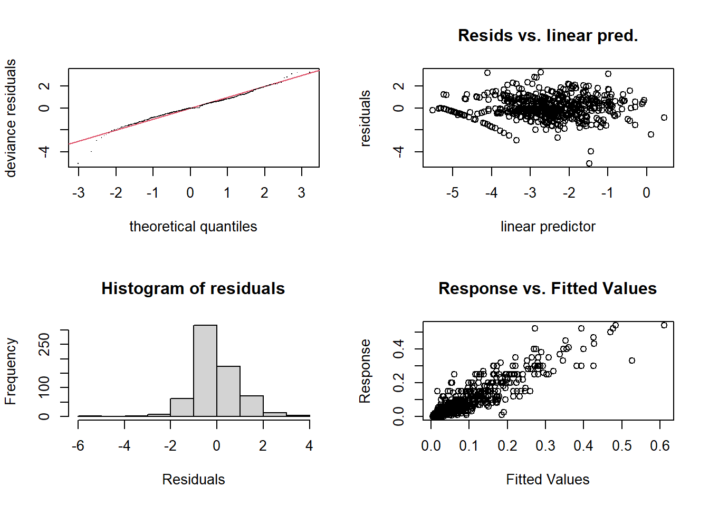
Method: REML Optimizer: outer newton
full convergence after 5 iterations.
Gradient range [-1.707434e-11,5.87108e-09]
(score -1264.759 & scale 1).
Hessian positive definite, eigenvalue range [16.41485,276.4182].
Model rank = 61 / 61
Basis dimension (k) checking results. Low p-value (k-index<1) may
indicate that k is too low, especially if edf is close to k'.
k' edf k-index p-value
s(env) 36.0 34.2 NA NACode
emm_final <- emmeans(
m_final,
~ geno,
type = "response")
emm_final_df <- as.data.frame(emm_final) %>%
dplyr::mutate(
response_pct = response * 100,
lower_pct = lower.CL * 100,
upper_pct = upper.CL * 100) %>%
dplyr::arrange(response_pct)
sev_vec <- emm_final_df$response_pct
names(sev_vec) <- as.character(emm_final_df$geno)
dist_sev <- dist(sev_vec)
hc_sev <- hclust(
dist_sev,
method = "ward.D2")
groups_sev <- cutree(hc_sev, k = 3)
class_final_df <- data.frame(
geno = names(groups_sev),
group_num = as.numeric(groups_sev),
response_pct = as.numeric(sev_vec[names(groups_sev)])) %>%
dplyr::group_by(group_num) %>%
dplyr::mutate(mean_group = mean(response_pct, na.rm = TRUE)) %>%
dplyr::ungroup() %>%
dplyr::distinct(group_num, mean_group) %>%
dplyr::arrange(mean_group) %>%
dplyr::mutate(
sev_class = c("MR", "MS", "HS")) %>%
dplyr::right_join(
data.frame(
geno = names(groups_sev),
group_num = as.numeric(groups_sev),
response_pct = as.numeric(sev_vec[names(groups_sev)])),
by = "group_num") %>%
dplyr::arrange(response_pct)
class_final_df# A tibble: 25 × 5
group_num mean_group sev_class geno response_pct
<dbl> <dbl> <chr> <chr> <dbl>
1 1 6.44 MR TBIO Capaz 4.09
2 1 6.44 MR TBIO Sossego 4.82
3 1 6.44 MR TBIO Motriz 4.98
4 1 6.44 MR TBIO Audaz 5.03
5 1 6.44 MR ORS 1403 5.38
6 1 6.44 MR TBIO Talisma 5.39
7 1 6.44 MR TBIO Blanc 5.47
8 1 6.44 MR ORS MPerola 5.72
9 1 6.44 MR TBIO Duque 6.05
10 1 6.44 MR TBIO Ponteiro 6.47
# ℹ 15 more rowsCode
emm_final_df <- emm_final_df %>%
dplyr::mutate(geno_chr = as.character(geno)) %>%
dplyr::left_join(
class_final_df %>% dplyr::select(geno, sev_class),
by = c("geno_chr" = "geno")) %>%
dplyr::arrange(response_pct) %>%
dplyr::mutate(
geno = factor(geno_chr, levels = geno_chr),
sev_class = factor(sev_class, levels = c("MR", "MS", "HS")))
class_cols <- c(
"MR" = "#3A7CA5",
"MS" = "#f7c841",
"HS" = "#C11C84")
dend_sev <- as.dendrogram(hc_sev)
leaf_order <- labels(dend_sev)
cluster_order <- unique(groups_sev[leaf_order])
class_by_group <- class_final_df %>%
dplyr::distinct(group_num, sev_class)
cols_for_dend <- class_by_group$sev_class[
match(cluster_order, class_by_group$group_num)
]
cols_for_dend <- class_cols[cols_for_dend]
dend_sev_col <- dend_sev %>%
color_branches(
k = 3,
col = cols_for_dend) %>%
set("labels_cex", 0.8) %>%
set("branches_lwd", 2)
p_dend_final <- wrap_elements(
full = ~{
par(mar = c(6, 4, 1, 1))
plot(
dend_sev_col,
main = "",
ylab = "Height",
xlab = "",
sub = ""
) })
p_final_class <- ggplot(
emm_final_df,
aes(x = geno, y = response_pct, color = sev_class)) +
geom_point(size = 3) +
geom_errorbar(
aes(ymin = lower_pct, ymax = upper_pct),
width = 0.2) +
scale_color_manual(values = class_cols) +
coord_flip() +
labs(
x = "Genotype",
y = "Model-adjusted final severity (%)",
color = "Class",
title = "") +
theme_bw() +
theme(
legend.position = "bottom",
axis.text.y = element_text(size = 10),
axis.text.x = element_text(size = 10))
p_final_class|p_dend_final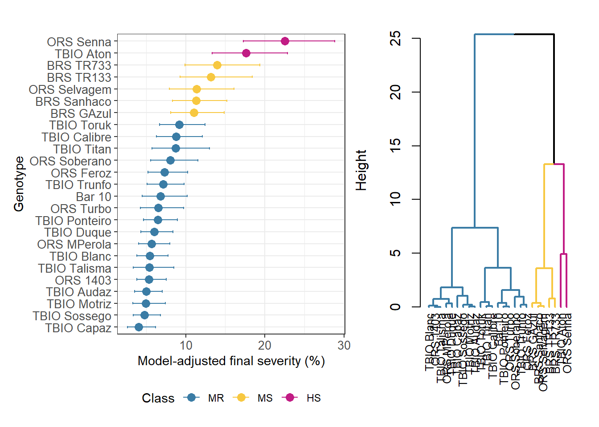
Code
# ggsave("sev_ts.png", width = 13, height = 11, bg = "white", dpi = 1000)
#### AACPD ############
dat_ready <- dat_ready %>%
mutate(
y_orig = tan_spot / 100)
audpc_fun <- function(time, y) {
ord <- order(time)
time <- time[ord]
y <- y[ord]
sum(diff(time) * (head(y, -1) + tail(y, -1)) / 2, na.rm = TRUE)}
aacpd_dat <- dat_ready %>%
dplyr::filter(
!is.na(time),
!is.na(y_orig),
!is.na(env),
!is.na(geno)) %>%
dplyr::group_by(env, geno) %>%
dplyr::summarise(
aacpd = audpc_fun(time, y_orig) * 100,
n_eval = n_distinct(time),
time_min = min(time),
time_max = max(time),
.groups = "drop") %>%
dplyr::mutate(
env = as.factor(env),
geno = as.factor(geno))
aacpd_dat %>% count(n_eval)# A tibble: 12 × 2
n_eval n
<int> <int>
1 3 9
2 4 12
3 5 48
4 6 75
5 7 150
6 8 114
7 9 114
8 10 50
9 11 20
10 12 14
11 13 31
12 14 12Code
aacpd_dat %>% count(time_min, time_max)# A tibble: 118 × 3
time_min time_max n
<dbl> <dbl> <int>
1 21 75 3
2 21 77 3
3 21 80 4
4 21 83 6
5 21 85 4
6 21 87 8
7 22 80 1
8 22 85 1
9 22 87 5
10 22 90 16
# ℹ 108 more rowsCode
aacpd_dat <- aacpd_dat %>%
mutate(log_aacpd = log(aacpd + 1))
m_aacpd <- gam(
log_aacpd ~ geno + s(env, bs = "re"),
data = aacpd_dat,
family = gaussian(),
method = "REML")
gam.check(m_aacpd)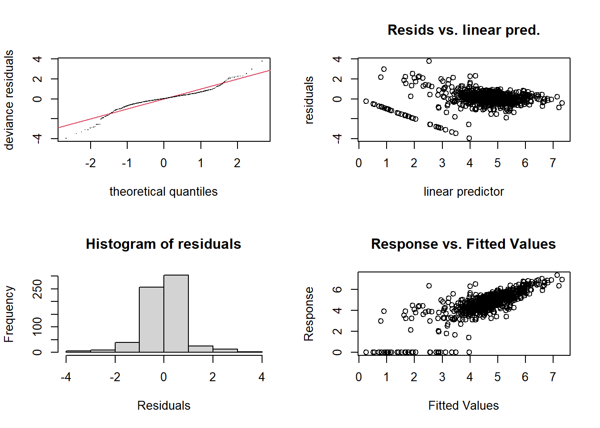
Method: REML Optimizer: outer newton
full convergence after 5 iterations.
Gradient range [-0.0003253779,0.0002859596]
(score 875.8883 & scale 0.7090223).
Hessian positive definite, eigenvalue range [15.20467,312.9556].
Model rank = 61 / 61
Basis dimension (k) checking results. Low p-value (k-index<1) may
indicate that k is too low, especially if edf is close to k'.
k' edf k-index p-value
s(env) 36.0 33.7 NA NACode
summary(m_aacpd)
Family: gaussian
Link function: identity
Formula:
log_aacpd ~ geno + s(env, bs = "re")
Parametric coefficients:
Estimate Std. Error t value Pr(>|t|)
(Intercept) 4.52436 0.28778 15.722 < 2e-16 ***
genoBRS GAzul 0.60125 0.27485 2.188 0.02909 *
genoBRS Sanhaco 0.38528 0.27823 1.385 0.16665
genoBRS TR133 0.63356 0.31313 2.023 0.04349 *
genoBRS TR733 0.93678 0.31313 2.992 0.00289 **
genoORS 1403 -0.26207 0.27330 -0.959 0.33801
genoORS Feroz -0.02705 0.27553 -0.098 0.92183
genoORS MPerola -0.15940 0.27330 -0.583 0.55995
genoORS Selvagem 0.62864 0.31313 2.008 0.04514 *
genoORS Senna 1.09317 0.27553 3.967 8.16e-05 ***
genoORS Soberano 0.11316 0.29478 0.384 0.70121
genoORS Turbo -0.25319 0.31313 -0.809 0.41908
genoTBIO Aton 1.11224 0.26902 4.134 4.08e-05 ***
genoTBIO Audaz -0.53903 0.27176 -1.983 0.04777 *
genoTBIO Blanc -0.05360 0.27553 -0.195 0.84584
genoTBIO Calibre 0.11965 0.27553 0.434 0.66427
genoTBIO Capaz -0.79924 0.29478 -2.711 0.00690 **
genoTBIO Duque -0.23202 0.26902 -0.862 0.38878
genoTBIO Motriz -0.48913 0.29478 -1.659 0.09759 .
genoTBIO Ponteiro 0.01613 0.26902 0.060 0.95220
genoTBIO Sossego -0.32283 0.28001 -1.153 0.24942
genoTBIO Talisma -0.14079 0.33235 -0.424 0.67199
genoTBIO Titan 0.47402 0.33235 1.426 0.15431
genoTBIO Toruk 0.57869 0.26902 2.151 0.03187 *
genoTBIO Trunfo -0.03076 0.26902 -0.114 0.90901
---
Signif. codes: 0 '***' 0.001 '**' 0.01 '*' 0.05 '.' 0.1 ' ' 1
Approximate significance of smooth terms:
edf Ref.df F p-value
s(env) 33.67 35 27.82 <2e-16 ***
---
Signif. codes: 0 '***' 0.001 '**' 0.01 '*' 0.05 '.' 0.1 ' ' 1
R-sq.(adj) = 0.651 Deviance explained = 68.2%
-REML = 875.89 Scale est. = 0.70902 n = 649Code
emm_aacpd <- emmeans(m_aacpd, ~ geno)
emm_aacpd_df <- as.data.frame(emm_aacpd) %>%
dplyr::mutate(
emmean_orig = exp(emmean) - 1,
lower_orig = exp(lower.CL) - 1,
upper_orig = exp(upper.CL) - 1) %>%
dplyr::arrange(emmean_orig)
aacpd_vec <- emm_aacpd_df$emmean_orig
names(aacpd_vec) <- as.character(emm_aacpd_df$geno)
dist_aacpd <- dist(aacpd_vec)
hc_aacpd <- hclust(
dist_aacpd,
method = "ward.D2")
groups_aacpd <- cutree(hc_aacpd, k = 3)
class_df <- data.frame(
geno = names(groups_aacpd),
group_num = as.numeric(groups_aacpd),
emmean_orig = as.numeric(aacpd_vec[names(groups_aacpd)])) %>%
dplyr::group_by(group_num) %>%
dplyr::mutate(mean_group = mean(emmean_orig, na.rm = TRUE)) %>%
dplyr::ungroup() %>%
dplyr::distinct(group_num, mean_group) %>%
dplyr::arrange(mean_group) %>%
dplyr::mutate(
aacpd_class = c("MR", "MS", "HS")) %>%
dplyr::right_join(
data.frame(
geno = names(groups_aacpd),
group_num = as.numeric(groups_aacpd),
emmean_orig = as.numeric(aacpd_vec[names(groups_aacpd)])),
by = "group_num") %>%
dplyr::arrange(emmean_orig)
# Joining classes to adjusted means
emm_aacpd_df <- emm_aacpd_df %>%
dplyr::mutate(geno_chr = as.character(geno)) %>%
dplyr::left_join(
class_df %>% dplyr::select(geno, aacpd_class),
by = c("geno_chr" = "geno") ) %>%
dplyr::arrange(emmean_orig) %>%
dplyr::mutate(
geno = factor(geno_chr, levels = geno_chr),
aacpd_class = factor(aacpd_class, levels = c("MR", "MS", "HS")))
class_cols <- c(
"MR" = "#3A7CA5",
"MS" = "#f7c841",
"HS" = "#C11C84")
dend_aacpd <- as.dendrogram(hc_aacpd)
leaf_order <- labels(dend_aacpd)
cluster_order <- unique(groups_aacpd[leaf_order])
class_by_group <- class_df %>%
dplyr::distinct(group_num, aacpd_class)
cols_for_dend <- class_by_group$aacpd_class[
match(cluster_order, class_by_group$group_num)
]
cols_for_dend <- class_cols[cols_for_dend]
dend_aacpd_col <- dend_aacpd %>%
color_branches(
k = 3,
col = cols_for_dend) %>%
set("labels_cex", 0.8) %>%
set("branches_lwd", 2)
library(patchwork)
p_dend <- wrap_elements(
full = ~{
par(mar = c(6, 4, 1, 1))
plot(
dend_aacpd_col,
main = "",
ylab = "Height",
xlab = "",
sub = "")})
p_aacpd_class <- ggplot(
emm_aacpd_df,
aes(x = geno, y = emmean_orig, color = aacpd_class)) +
geom_point(size = 3) +
geom_errorbar(
aes(ymin = lower_orig, ymax = upper_orig),
width = 0.2) +
scale_color_manual(values = class_cols) +
coord_flip() +
labs(
x = "Genotype",
y = "Model-adjusted AUDPC",
color = "",
title = "") +
theme_bw() +
theme(
legend.position = "none",
axis.text.y = element_text(size = 10),
axis.text.x = element_text(size = 10))
(p_aacpd_class|p_dend)/
(p_final_class|p_dend_final)+plot_annotation(tag_levels = "A")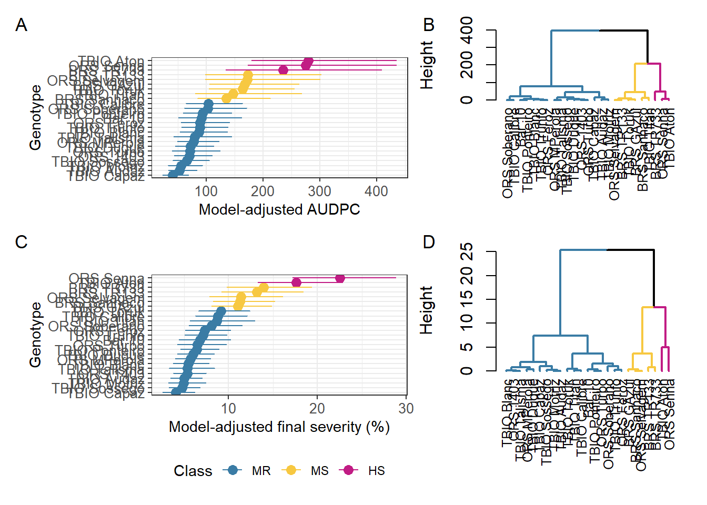
Code
# ggsave("aacpd_sev_ts.png", width = 13, height = 11, bg = "white", dpi = 1000)
## Functional Model (Curve Comparison)
set.seed(1)
m1 <- r4pde::compare_curves(
data = dat_ready,
time = "time",
response = "y",
treatment = "geno",
environment = "env",
cluster_k = 3,
show_progress = TRUE,
perm_unit = "geno",
perm_strata = "env",
k_smooth = 10,
k_env = 4,
k_trt = 4,
gamma = 1.6,
min_points = 5)
library(viridis)
env_por_geno <- m1$data %>%
group_by(geno) %>%
summarise(n_env = n_distinct(env)) %>%
arrange(n_env)
env_por_geno# A tibble: 25 × 2
geno n_env
<fct> <int>
1 TBIO Titan 11
2 TBIO Talisma 12
3 Bar 10 13
4 BRS TR133 13
5 BRS TR733 14
6 ORS Selvagem 15
7 ORS Turbo 15
8 ORS Soberano 19
9 TBIO Capaz 19
10 TBIO Motriz 19
# ℹ 15 more rowsCode
summary(m1$gam)
Family: quasibinomial
Link function: logit
Formula:
.y_raw ~ geno + s(time, k = 10) + s(time, by = geno, k = 4) +
s(env, bs = "re")
Parametric coefficients:
Estimate Std. Error t value Pr(>|t|)
(Intercept) -5.14538 0.14920 -34.486 < 2e-16 ***
genoBRS GAzul 1.14877 0.14197 8.092 7.27e-16 ***
genoBRS Sanhaco 0.48295 0.15697 3.077 0.00210 **
genoBRS TR133 0.94659 0.17810 5.315 1.11e-07 ***
genoBRS TR733 1.04455 0.15959 6.545 6.51e-11 ***
genoORS 1403 0.26318 0.12300 2.140 0.03242 *
genoORS Feroz 0.78373 0.15210 5.153 2.66e-07 ***
genoORS MPerola 0.22241 0.12387 1.796 0.07262 .
genoORS Selvagem 0.85370 0.12705 6.720 2.02e-11 ***
genoORS Senna 0.98097 0.15313 6.406 1.62e-10 ***
genoORS Soberano 0.56651 0.13363 4.239 2.28e-05 ***
genoORS Turbo 0.19587 0.13936 1.405 0.15994
genoTBIO Aton 1.51300 0.11263 13.433 < 2e-16 ***
genoTBIO Audaz 0.07152 0.12416 0.576 0.56462
genoTBIO Blanc 0.49639 0.16376 3.031 0.00245 **
genoTBIO Calibre 0.55761 0.12105 4.606 4.20e-06 ***
genoTBIO Capaz -0.21165 0.14947 -1.416 0.15683
genoTBIO Duque 0.36477 0.11960 3.050 0.00230 **
genoTBIO Motriz 0.31673 0.20143 1.572 0.11592
genoTBIO Ponteiro 0.71380 0.13737 5.196 2.11e-07 ***
genoTBIO Sossego 0.22524 0.14553 1.548 0.12176
genoTBIO Talisma 0.11088 0.15562 0.713 0.47619
genoTBIO Titan 0.62428 0.13943 4.477 7.72e-06 ***
genoTBIO Toruk 1.15345 0.13455 8.573 < 2e-16 ***
genoTBIO Trunfo 0.40299 0.12976 3.106 0.00191 **
---
Signif. codes: 0 '***' 0.001 '**' 0.01 '*' 0.05 '.' 0.1 ' ' 1
Approximate significance of smooth terms:
edf Ref.df F p-value
s(time) 5.581e+00 9 404.251 < 2e-16 ***
s(time):genoBar 10 7.748e-05 3 0.000 0.409896
s(time):genoBRS GAzul 1.616e+00 3 4.108 0.000782 ***
s(time):genoBRS Sanhaco 9.285e-01 3 7.623 2.14e-06 ***
s(time):genoBRS TR133 7.782e-01 3 2.114 0.007077 **
s(time):genoBRS TR733 5.020e-01 3 0.566 0.072048 .
s(time):genoORS 1403 9.239e-05 3 0.000 0.512838
s(time):genoORS Feroz 6.827e-01 3 1.207 0.024408 *
s(time):genoORS MPerola 8.229e-05 3 0.000 0.629669
s(time):genoORS Selvagem 4.518e-05 3 0.000 0.975023
s(time):genoORS Senna 9.465e-01 3 10.891 < 2e-16 ***
s(time):genoORS Soberano 1.420e-01 3 0.086 0.163326
s(time):genoORS Turbo 3.608e-05 3 0.000 0.893907
s(time):genoTBIO Aton 1.411e-04 3 0.000 0.311920
s(time):genoTBIO Audaz 9.693e-05 3 0.000 0.364878
s(time):genoTBIO Blanc 9.929e-01 3 1.547 0.015172 *
s(time):genoTBIO Calibre 7.517e-05 3 0.000 0.325287
s(time):genoTBIO Capaz 1.142e-04 3 0.000 0.386488
s(time):genoTBIO Duque 6.813e-05 3 0.000 0.739220
s(time):genoTBIO Motriz 1.210e+00 3 3.118 0.001142 **
s(time):genoTBIO Ponteiro 6.966e-01 3 1.274 0.020803 *
s(time):genoTBIO Sossego 3.907e-01 3 0.349 0.103705
s(time):genoTBIO Talisma 1.142e-04 3 0.000 0.167126
s(time):genoTBIO Titan 4.374e-05 3 0.000 0.815797
s(time):genoTBIO Toruk 8.999e-01 3 4.951 5.54e-05 ***
s(time):genoTBIO Trunfo 4.124e-01 3 0.317 0.108833
s(env) 3.419e+01 35 66.858 < 2e-16 ***
---
Signif. codes: 0 '***' 0.001 '**' 0.01 '*' 0.05 '.' 0.1 ' ' 1
R-sq.(adj) = 0.735 Deviance explained = 74.7%
fREML = -1638 Scale est. = 0.025005 n = 5235Code
# write_xlsx(env_por_geno, "TS_env.xlsx")
cols <- c("#3A7CA5", "#f7c841", "#C11C84")
p_curves <- plot_curves(m1) +
scale_color_manual(
values = cols,
labels = c( "MR", "MS", "HS")) +
scale_x_continuous(breaks = seq(0, 90, by = 10)) +
ylim(0,0.25) +
theme(legend.position = "top")
p_dend <- plot_dendrogram(m1) +
scale_color_manual(
values = cols,
labels = c( "MR", "MS", "HS")) +
scale_y_continuous(expand = expansion(mult = c(0.05, 0.2)))
library(patchwork)
p_curves | p_dend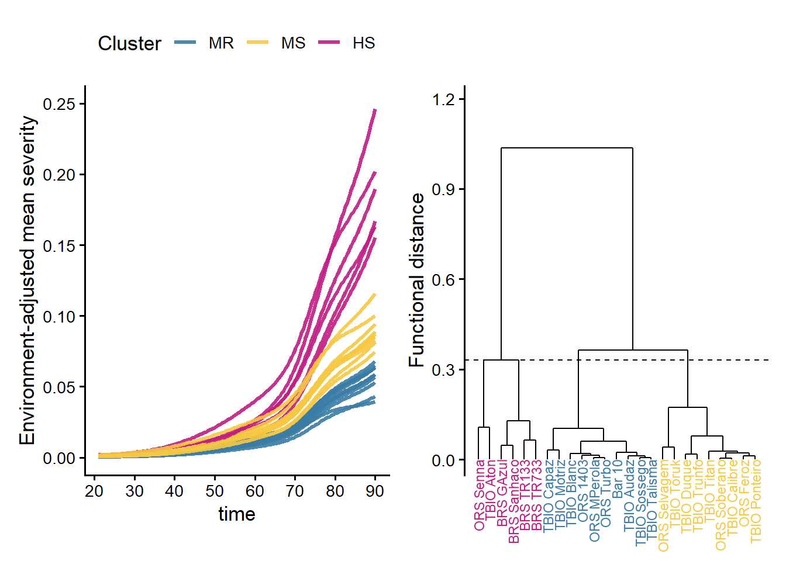
Code
summary(m1$gam)
Family: quasibinomial
Link function: logit
Formula:
.y_raw ~ geno + s(time, k = 10) + s(time, by = geno, k = 4) +
s(env, bs = "re")
Parametric coefficients:
Estimate Std. Error t value Pr(>|t|)
(Intercept) -5.14538 0.14920 -34.486 < 2e-16 ***
genoBRS GAzul 1.14877 0.14197 8.092 7.27e-16 ***
genoBRS Sanhaco 0.48295 0.15697 3.077 0.00210 **
genoBRS TR133 0.94659 0.17810 5.315 1.11e-07 ***
genoBRS TR733 1.04455 0.15959 6.545 6.51e-11 ***
genoORS 1403 0.26318 0.12300 2.140 0.03242 *
genoORS Feroz 0.78373 0.15210 5.153 2.66e-07 ***
genoORS MPerola 0.22241 0.12387 1.796 0.07262 .
genoORS Selvagem 0.85370 0.12705 6.720 2.02e-11 ***
genoORS Senna 0.98097 0.15313 6.406 1.62e-10 ***
genoORS Soberano 0.56651 0.13363 4.239 2.28e-05 ***
genoORS Turbo 0.19587 0.13936 1.405 0.15994
genoTBIO Aton 1.51300 0.11263 13.433 < 2e-16 ***
genoTBIO Audaz 0.07152 0.12416 0.576 0.56462
genoTBIO Blanc 0.49639 0.16376 3.031 0.00245 **
genoTBIO Calibre 0.55761 0.12105 4.606 4.20e-06 ***
genoTBIO Capaz -0.21165 0.14947 -1.416 0.15683
genoTBIO Duque 0.36477 0.11960 3.050 0.00230 **
genoTBIO Motriz 0.31673 0.20143 1.572 0.11592
genoTBIO Ponteiro 0.71380 0.13737 5.196 2.11e-07 ***
genoTBIO Sossego 0.22524 0.14553 1.548 0.12176
genoTBIO Talisma 0.11088 0.15562 0.713 0.47619
genoTBIO Titan 0.62428 0.13943 4.477 7.72e-06 ***
genoTBIO Toruk 1.15345 0.13455 8.573 < 2e-16 ***
genoTBIO Trunfo 0.40299 0.12976 3.106 0.00191 **
---
Signif. codes: 0 '***' 0.001 '**' 0.01 '*' 0.05 '.' 0.1 ' ' 1
Approximate significance of smooth terms:
edf Ref.df F p-value
s(time) 5.581e+00 9 404.251 < 2e-16 ***
s(time):genoBar 10 7.748e-05 3 0.000 0.409896
s(time):genoBRS GAzul 1.616e+00 3 4.108 0.000782 ***
s(time):genoBRS Sanhaco 9.285e-01 3 7.623 2.14e-06 ***
s(time):genoBRS TR133 7.782e-01 3 2.114 0.007077 **
s(time):genoBRS TR733 5.020e-01 3 0.566 0.072048 .
s(time):genoORS 1403 9.239e-05 3 0.000 0.512838
s(time):genoORS Feroz 6.827e-01 3 1.207 0.024408 *
s(time):genoORS MPerola 8.229e-05 3 0.000 0.629669
s(time):genoORS Selvagem 4.518e-05 3 0.000 0.975023
s(time):genoORS Senna 9.465e-01 3 10.891 < 2e-16 ***
s(time):genoORS Soberano 1.420e-01 3 0.086 0.163326
s(time):genoORS Turbo 3.608e-05 3 0.000 0.893907
s(time):genoTBIO Aton 1.411e-04 3 0.000 0.311920
s(time):genoTBIO Audaz 9.693e-05 3 0.000 0.364878
s(time):genoTBIO Blanc 9.929e-01 3 1.547 0.015172 *
s(time):genoTBIO Calibre 7.517e-05 3 0.000 0.325287
s(time):genoTBIO Capaz 1.142e-04 3 0.000 0.386488
s(time):genoTBIO Duque 6.813e-05 3 0.000 0.739220
s(time):genoTBIO Motriz 1.210e+00 3 3.118 0.001142 **
s(time):genoTBIO Ponteiro 6.966e-01 3 1.274 0.020803 *
s(time):genoTBIO Sossego 3.907e-01 3 0.349 0.103705
s(time):genoTBIO Talisma 1.142e-04 3 0.000 0.167126
s(time):genoTBIO Titan 4.374e-05 3 0.000 0.815797
s(time):genoTBIO Toruk 8.999e-01 3 4.951 5.54e-05 ***
s(time):genoTBIO Trunfo 4.124e-01 3 0.317 0.108833
s(env) 3.419e+01 35 66.858 < 2e-16 ***
---
Signif. codes: 0 '***' 0.001 '**' 0.01 '*' 0.05 '.' 0.1 ' ' 1
R-sq.(adj) = 0.735 Deviance explained = 74.7%
fREML = -1638 Scale est. = 0.025005 n = 5235Code
# Label endpoints (optional)
pred_df <- m1$pred
lab_df <- pred_df %>%
group_by(geno) %>%
filter(time == max(time, na.rm = TRUE)) %>%
ungroup()
plot_curves(m1) +
coord_cartesian(ylim = c(0, 0.35), xlim = c(50, 120)) +
geom_text_repel(
data = lab_df,
aes(x = time, y = mu, label = geno),
inherit.aes = FALSE,
direction = "y", hjust = 0, nudge_x = 5,
size = 3, segment.size = 0.2, segment.alpha = 0.6) +
expand_limits(x = max(pred_df$time, na.rm = TRUE) + 10)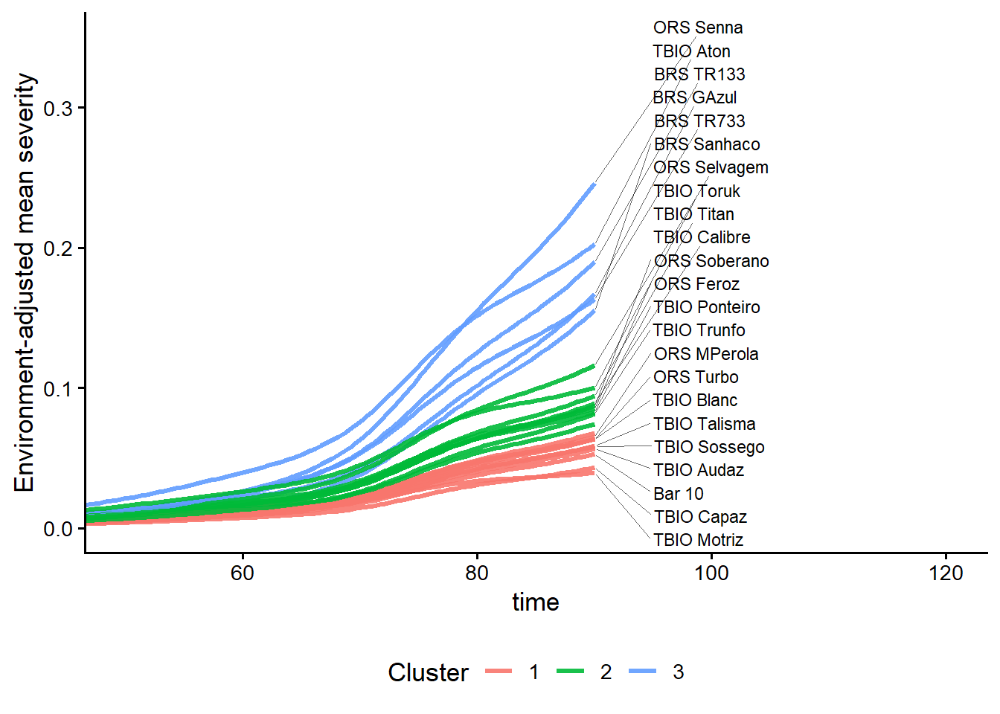
Code
# Custom adjustments
n <- nrow(dat_ready)
dat_ready |> ggplot(aes(y))+geom_histogram()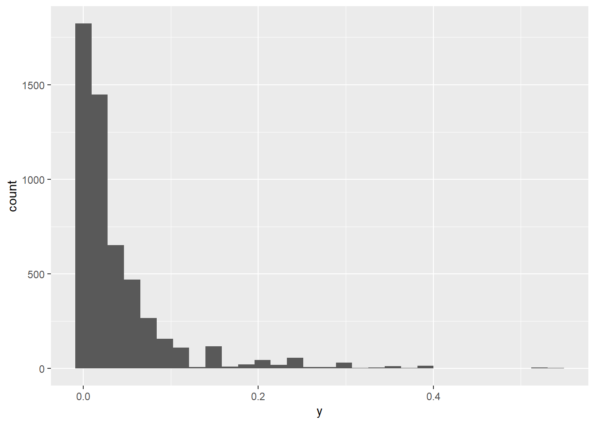
Code
# conversion of variable y
dat_ready$yy <- (dat_ready$y * (n - 1) + 0.5) / n
dat_ready <- dat_ready %>%
mutate(
env = factor(env),
geno = factor(geno),
time = as.numeric(time),
unit = interaction(env, geno, drop = TRUE))
dat_ready <- dat_ready %>%
mutate(
env = factor(env),
geno = factor(geno),
time = as.numeric(time),
unit = factor(curve_id))
# remove rows with NA
dat2 <- dat_ready %>%
filter(
!is.na(yy),
!is.na(time),
!is.na(geno),
!is.na(env),
!is.na(unit)
)
# minimum time per curve (gen x env)
min_points <- 5
dat2 <- dat2 %>%
group_by(unit) %>%
filter(n() >= min_points) %>%
ungroup()
m_equal <- bam(
yy ~
geno + # <- importante
s(time, k = 10) +
s(time, by = geno, k = 4) + # <- usar by=
s(env, bs = "re"),
family = betar(link = "logit"),
data = dat2,
method = "fREML",
gamma = 1.6,
discrete = TRUE,
select = TRUE)
summary(m_equal)
Family: Beta regression(38.828)
Link function: logit
Formula:
yy ~ geno + s(time, k = 10) + s(time, by = geno, k = 4) + s(env,
bs = "re")
Parametric coefficients:
Estimate Std. Error t value Pr(>|t|)
(Intercept) -4.22028 0.10575 -39.907 < 2e-16 ***
genoBRS GAzul 0.42720 0.09724 4.393 1.14e-05 ***
genoBRS Sanhaco 0.35660 0.09949 3.584 0.000341 ***
genoBRS TR133 0.54614 0.11463 4.765 1.94e-06 ***
genoBRS TR733 0.54454 0.12281 4.434 9.45e-06 ***
genoORS 1403 0.07729 0.09228 0.838 0.402344
genoORS Feroz 0.29882 0.09211 3.244 0.001186 **
genoORS MPerola 0.11222 0.09243 1.214 0.224735
genoORS Selvagem 0.54998 0.10457 5.260 1.50e-07 ***
genoORS Senna 0.56705 0.10480 5.411 6.56e-08 ***
genoORS Soberano 0.33826 0.09849 3.435 0.000598 ***
genoORS Turbo 0.13818 0.11161 1.238 0.215729
genoTBIO Aton 0.76738 0.09430 8.137 5.03e-16 ***
genoTBIO Audaz -0.02719 0.09231 -0.295 0.768333
genoTBIO Blanc 0.25548 0.10132 2.522 0.011714 *
genoTBIO Calibre 0.31659 0.09157 3.457 0.000550 ***
genoTBIO Capaz -0.00935 0.10854 -0.086 0.931355
genoTBIO Duque 0.16891 0.09026 1.871 0.061362 .
genoTBIO Motriz 0.16400 0.10830 1.514 0.130036
genoTBIO Ponteiro 0.36892 0.08966 4.115 3.94e-05 ***
genoTBIO Sossego 0.04851 0.09404 0.516 0.606009
genoTBIO Talisma 0.26003 0.12362 2.103 0.035471 *
genoTBIO Titan 0.39019 0.10841 3.599 0.000322 ***
genoTBIO Toruk 0.53529 0.09470 5.653 1.66e-08 ***
genoTBIO Trunfo 0.19894 0.09522 2.089 0.036734 *
---
Signif. codes: 0 '***' 0.001 '**' 0.01 '*' 0.05 '.' 0.1 ' ' 1
Approximate significance of smooth terms:
edf Ref.df F p-value
s(time) 7.242e+00 9 574.546 < 2e-16 ***
s(time):genoBar 10 6.885e-04 3 0.000 0.72930
s(time):genoBRS GAzul 1.461e+00 3 20.139 < 2e-16 ***
s(time):genoBRS Sanhaco 1.788e+00 3 19.566 < 2e-16 ***
s(time):genoBRS TR133 9.089e-01 3 6.098 2.77e-05 ***
s(time):genoBRS TR733 9.108e-01 3 5.343 6.49e-05 ***
s(time):genoORS 1403 5.668e-04 3 0.000 0.53622
s(time):genoORS Feroz 4.069e-04 3 0.000 0.68477
s(time):genoORS MPerola 6.206e-04 3 0.000 0.57625
s(time):genoORS Selvagem 7.046e-01 3 0.766 0.04992 *
s(time):genoORS Senna 9.833e-01 3 34.705 < 2e-16 ***
s(time):genoORS Soberano 2.308e-01 3 0.148 0.14905
s(time):genoORS Turbo 4.137e-01 3 0.402 0.09800 .
s(time):genoTBIO Aton 1.917e+00 3 32.494 < 2e-16 ***
s(time):genoTBIO Audaz 4.352e-03 3 0.002 0.22197
s(time):genoTBIO Blanc 1.014e+00 3 1.576 0.01454 *
s(time):genoTBIO Calibre 3.075e-04 3 0.000 0.80608
s(time):genoTBIO Capaz 9.192e-01 3 6.891 9.60e-06 ***
s(time):genoTBIO Duque 2.266e-03 3 0.001 0.19080
s(time):genoTBIO Motriz 1.577e+00 3 7.853 3.68e-06 ***
s(time):genoTBIO Ponteiro 8.337e-04 3 0.000 0.22776
s(time):genoTBIO Sossego 8.394e-04 3 0.000 0.20044
s(time):genoTBIO Talisma 9.769e-01 3 2.906 0.00315 **
s(time):genoTBIO Titan 4.100e-04 3 0.000 0.90561
s(time):genoTBIO Toruk 1.791e+00 3 7.392 1.02e-05 ***
s(time):genoTBIO Trunfo 7.470e-01 3 1.754 0.01171 *
s(env) 3.422e+01 35 72.710 < 2e-16 ***
---
Signif. codes: 0 '***' 0.001 '**' 0.01 '*' 0.05 '.' 0.1 ' ' 1
R-sq.(adj) = 0.68 Deviance explained = 76%
fREML = -6822.3 Scale est. = 1 n = 5235Code
dat_ready$geno <- factor(dat_ready$geno)
dat_ready$env <- factor(dat_ready$env)
dat_ready$time <- as.numeric(dat_ready$time)
########################
# ---------------------------
# Agreement: Breeder Class vs Functional Clusters
# ---------------------------
# Find treatment/genotype column inside r4pde outputs
geno_class = resistencia_tbl |>
mutate( geno = str_squish(geno),
aacpd_cl = factor(aacpd_cl, levels = c("MR", "MS", "HS"), ordered = TRUE),
severity_cl = factor(severity_cl, levels = c("MR", "MS", "HS"), ordered = TRUE))
get_trt_col = function(df){
candidates = c("geno")
hit = candidates [candidates %in% names(df)]
if (length(hit) == 0){
stop("no treat")
}
hit[1]
}
trt_col = get_trt_col(m1$clusters)
geno_clusters = m1$clusters |>
transmute(
geno = str_squish(as.character(.data[[trt_col]])),
cluster = factor(cluster)) |>
mutate(functional_cl = case_when(cluster == "1"~"MR",
cluster == "2" ~ "MS",
cluster == "3"~"HS",
TRUE ~ NA_character_),
functional_cl = factor(functional_cl, levels = c("MR","MS","HS"), ordered=TRUE))
comp_tbl = geno_clusters |>
left_join(geno_class, by='geno')
# ARI AUDPC
tab_func_aacpd = table(Functional = comp_tbl$functional_cl,
AACPD = comp_tbl$aacpd_cl)
ari1 = adjustedRandIndex(comp_tbl$functional_cl,
comp_tbl$aacpd_cl)
# ARI final severity
tab_func_sev = table(Functional = comp_tbl$functional_cl,
sev = comp_tbl$severity_cl)
ari2 = adjustedRandIndex(comp_tbl$functional_cl,
comp_tbl$severity_cl)
# Cramér's V
cramers_v = function(tab) {
chi2 = suppressWarnings(chisq.test(tab, correct = FALSE)$statistic)
n = sum(tab)
r = nrow(tab)
c = ncol(tab)
as.numeric(sqrt(chi2 / (n* min(r-1,c - 1))))
}
cmv1 = cramers_v(tab_func_aacpd)
cmv2 = cramers_v(tab_func_sev)
# ---------------------------
# Functional Separation (R2-like) and PCoA
# ---------------------------
# Gower-centered matrix from a distance matrix D (square, symmetric)
gower_center <- function(D) {
n <- nrow(D)
A <- -0.5 * (D^2)
H <- diag(n) - matrix(1, n, n) / n
H %*% A %*% H
}
# Functional R2-like (between-group / total) using Gower-centered distances
calc_R2_from_D <- function(D, group_vec) {
G <- gower_center(D)
grp <- factor(group_vec)
X <- model.matrix(~ grp)
P <- X %*% solve(t(X) %*% X) %*% t(X)
sum(diag(P %*% G)) / sum(diag(G))
}
D_curve <- as.matrix(m1$distance)
if(is.null(rownames(D_curve))){
trt_col = get_trt_col(m1$clusters)
rownames(D_curve) = as.character(m1$clusters[[trt_col]])
colnames(D_curve) = as.character(m1$clusters[[trt_col]])
}
class_for_D <- comp_tbl %>%
mutate(geno = stringr::str_squish(geno)) %>%
filter(geno %in% rownames(D_curve)) %>%
distinct(geno, functional_cl, aacpd_cl, severity_cl)
class_for_D <- class_for_D %>%
slice(match(rownames(D_curve), geno))
grp_aacpd <- droplevels(factor(class_for_D$aacpd_cl, levels = c("MR", "MS", "HS")))
grp_severity <- droplevels(factor(class_for_D$severity_cl, levels = c("MR", "MS", "HS")))
grp_functional <- droplevels(factor(class_for_D$functional_cl, levels = c("MR", "MS", "HS")))
R2_aacpd <- calc_R2_from_D(D_curve, grp_aacpd)
R2_severity <- calc_R2_from_D(D_curve, grp_severity)
R2_functional <- calc_R2_from_D(D_curve, grp_functional)
R2_summary <- tibble(
classification = c("Functional class", "AACPD class", "Final severity class"),
R2_functional = c(R2_functional, R2_aacpd, R2_severity)
)
R2_summary# A tibble: 3 × 2
classification R2_functional
<chr> <dbl>
1 Functional class 0.858
2 AACPD class 0.818
3 Final severity class 0.852Code
# ---------------------------
# Choosing k (Silhouette, Functional R2, ARI)
# --------------------------
eval_k_fast <- function(m1, ks = c(3,4), geno_class,
hc_method = "ward.D2") {
# 1) Distance matrix (once)
D <- as.matrix(m1$distance)
stopifnot(nrow(D) == ncol(D))
trt_col <- get_trt_col(m1$clusters)
geno_order <- str_squish(as.character(m1$clusters[[trt_col]]))
if (is.null(rownames(D))) {
rownames(D) <- geno_order
colnames(D) <- geno_order
}
rownames(D) <- str_squish(rownames(D))
colnames(D) <- str_squish(colnames(D))
comp <- tibble(geno = rownames(D)) %>%
left_join(
geno_class %>%
mutate(geno = str_squish(as.character(geno))) %>%
dplyr::select(geno, aacpd_cl, severity_cl) %>%
distinct(),
by = "geno"
) %>%
filter(!is.na(aacpd_cl), !is.na(severity_cl))
# If any genotype has no class, restrict D
keep <- match(comp$geno, rownames(D))
D2 <- D[keep, keep, drop = FALSE]
stopifnot(all(comp$geno == rownames(D2)))
hc2 <- hclust(as.dist(D2), method = hc_method)
purrr::map_dfr(ks, function(k) {
cl <- cutree(hc2, k = k)
# Silhouette: NA if any cluster has only 1 genotype
if (any(table(cl) < 2)) {
mean_sil <- NA_real_
} else {
sil <- cluster::silhouette(cl, dist = as.dist(D2))
mean_sil <- mean(sil[, "sil_width"])
}
# Functional R2-like
R2 <- calc_R2_from_D(D2, cl)
# ARI with classes based on AUDPC
ari_aacpd <- mclust::adjustedRandIndex(
as.factor(cl),
as.factor(comp$aacpd_cl))
# ARI with classes based on final severity
ari_severity <- mclust::adjustedRandIndex(
as.factor(cl),
as.factor(comp$severity_cl))
tibble(
k = k,
mean_silhouette = mean_sil,
functional_R2 = R2,
ARI_aacpd = ari_aacpd,
ARI_severity = ari_severity,
min_cluster_n = min(table(cl)))
})
}
res_k <- eval_k_fast(
m1,
ks = c(2, 3, 4, 5),
geno_class = geno_class)
res_k# A tibble: 4 × 6
k mean_silhouette functional_R2 ARI_aacpd ARI_severity min_cluster_n
<dbl> <dbl> <dbl> <dbl> <dbl> <int>
1 2 0.685 0.764 0.568 0.795 6
2 3 0.540 0.858 0.341 0.355 6
3 4 0.549 0.936 0.366 0.409 2
4 5 0.552 0.957 0.430 0.414 2Code
# ---------------------------
# Epidemic Descriptors: t5 and vmax
# ---------------------------
# Compute genotype features from fitted mean curves (t5, vmax, t_vmax)
curve_features <- function(pred_df, threshold = 0.05) {
pred_df %>%
mutate(
geno = str_squish(as.character(geno)),
time = as.numeric(time)
) %>%
arrange(geno, time) %>%
group_by(geno) %>%
group_modify(~{
df <- .x
# Time to reach 5% severity
t5 <- NA_real_
if (any(df$mu >= threshold, na.rm = TRUE)) {
t5 <- min(df$time[df$mu >= threshold], na.rm = TRUE)
}
# Maximum epidemic velocity
dt <- diff(df$time)
dmu <- diff(df$mu)
slope <- dmu / dt
vmax <- if (length(slope) > 0) {
max(slope, na.rm = TRUE)
} else {
NA_real_
}
# Time at which vmax occurs
t_vmax <- if (is.finite(vmax)) {
df$time[which.max(slope)]
} else {
NA_real_
}
tibble(
t5 = t5,
vmax = vmax,
t_vmax = t_vmax
)
}) %>%
ungroup()
}
geno_feat <- curve_features(m1$pred, threshold = 0.05)
geno_feat <- geno_feat %>%
left_join(
comp_tbl %>%
dplyr::select(geno, cluster, functional_cl, aacpd_cl, severity_cl),
by = "geno"
)
geno_feat# A tibble: 25 × 8
geno t5 vmax t_vmax cluster functional_cl aacpd_cl severity_cl
<chr> <dbl> <dbl> <dbl> <fct> <ord> <ord> <ord>
1 BRS GAzul 71.6 0.00816 89.5 3 HS MS MS
2 BRS Sanhaco 72.6 0.00741 89.5 3 HS MS MS
3 BRS TR133 69.6 0.00784 74.6 3 HS MS MS
4 BRS TR733 69.6 0.00683 74.1 3 HS HS MS
5 Bar 10 88.5 0.00225 74.1 1 MR MR MR
6 ORS 1403 81.1 0.00288 74.1 1 MR MR MR
7 ORS Feroz 75.1 0.00369 73.6 2 MS MR MR
8 ORS MPerola 82.1 0.00277 74.1 1 MR MR MR
9 ORS Selvagem 72.6 0.00492 74.1 2 MS MS MS
10 ORS Senna 68.2 0.0109 89.5 3 HS HS HS
# ℹ 15 more rowsCode
class_cols <- c(
"MR" = "#3A7CA5",
"MS" = "#f7c841",
"HS" = "#C11C84")
p3 <- ggplot(geno_feat, aes(x = functional_cl, y = t5, color = functional_cl)) +
geom_boxplot(outlier.shape = NA) +
geom_point(
position = position_jitter(width = 0.12),
size = 2.5,
alpha = 0.7
) +
scale_color_manual(values = class_cols) +
scale_y_continuous(breaks = seq(20, 90, 10)) +
theme_classic() +
theme(legend.position = "none") +
labs(
x = "Functional class",
y = "Zadoks stage to 5% severity"
)
p4 <- ggplot(geno_feat, aes(x = functional_cl, y = vmax, color = functional_cl)) +
geom_boxplot(outlier.shape = NA) +
geom_point(
position = position_jitter(width = 0.12),
size = 2.5,
alpha = 0.7) +
scale_color_manual(values = class_cols) +
theme_classic() +
theme(legend.position = "none") +
labs(
x = "Functional class",
y = "Maximum epidemic velocity")
kruskal.test(t5 ~ functional_cl, data = geno_feat)
Kruskal-Wallis rank sum test
data: t5 by functional_cl
Kruskal-Wallis chi-squared = 18.849, df = 2, p-value = 8.074e-05Code
kruskal.test(vmax ~ functional_cl, data = geno_feat)
Kruskal-Wallis rank sum test
data: vmax by functional_cl
Kruskal-Wallis chi-squared = 21.046, df = 2, p-value = 2.691e-05Code
kruskal.test(t5 ~ aacpd_cl, data = geno_feat)
Kruskal-Wallis rank sum test
data: t5 by aacpd_cl
Kruskal-Wallis chi-squared = 16.382, df = 2, p-value = 0.0002771Code
kruskal.test(vmax ~ aacpd_cl, data = geno_feat)
Kruskal-Wallis rank sum test
data: vmax by aacpd_cl
Kruskal-Wallis chi-squared = 16.948, df = 2, p-value = 0.0002089Code
# By class based on final severity
kruskal.test(t5 ~ severity_cl, data = geno_feat)
Kruskal-Wallis rank sum test
data: t5 by severity_cl
Kruskal-Wallis chi-squared = 13.327, df = 2, p-value = 0.001276Code
kruskal.test(vmax ~ severity_cl, data = geno_feat)
Kruskal-Wallis rank sum test
data: vmax by severity_cl
Kruskal-Wallis chi-squared = 14.862, df = 2, p-value = 0.0005927Code
final_by_env <- dat_ready %>%
mutate(
y_orig = tan_spot / 100) %>%
group_by(env, geno) %>%
summarise(
final_sev_max = max(y_orig, na.rm = TRUE),
.groups = "drop" )
final_by_geno <- final_by_env %>%
group_by(geno) %>%
summarise(
final_sev_max_mean = mean(final_sev_max, na.rm = TRUE),
n_env = n(),
.groups = "drop")
feat2 <- geno_feat %>%
left_join(final_by_geno, by = "geno")
feat2# A tibble: 25 × 10
geno t5 vmax t_vmax cluster functional_cl aacpd_cl severity_cl
<chr> <dbl> <dbl> <dbl> <fct> <ord> <ord> <ord>
1 BRS GAzul 71.6 0.00816 89.5 3 HS MS MS
2 BRS Sanhaco 72.6 0.00741 89.5 3 HS MS MS
3 BRS TR133 69.6 0.00784 74.6 3 HS MS MS
4 BRS TR733 69.6 0.00683 74.1 3 HS HS MS
5 Bar 10 88.5 0.00225 74.1 1 MR MR MR
6 ORS 1403 81.1 0.00288 74.1 1 MR MR MR
7 ORS Feroz 75.1 0.00369 73.6 2 MS MR MR
8 ORS MPerola 82.1 0.00277 74.1 1 MR MR MR
9 ORS Selvagem 72.6 0.00492 74.1 2 MS MS MS
10 ORS Senna 68.2 0.0109 89.5 3 HS HS HS
# ℹ 15 more rows
# ℹ 2 more variables: final_sev_max_mean <dbl>, n_env <int>Code
cor.test(
feat2$final_sev_max_mean,
feat2$t5,
method = "spearman",
use = "complete.obs")
Spearman's rank correlation rho
data: feat2$final_sev_max_mean and feat2$t5
S = 3833.6, p-value = 9.024e-09
alternative hypothesis: true rho is not equal to 0
sample estimates:
rho
-0.8940612 Code
cor.test(
feat2$final_sev_max_mean,
feat2$vmax,
method = "spearman",
use = "complete.obs")
Spearman's rank correlation rho
data: feat2$final_sev_max_mean and feat2$vmax
S = 180, p-value = 1.573e-06
alternative hypothesis: true rho is not equal to 0
sample estimates:
rho
0.9307692 Code
cor.test(
feat2$t5,
feat2$vmax,
method = "spearman",
use = "complete.obs")
Spearman's rank correlation rho
data: feat2$t5 and feat2$vmax
S = 4001.9, p-value = 1.276e-15
alternative hypothesis: true rho is not equal to 0
sample estimates:
rho
-0.9772296 Code
mod <- lm(
final_sev_max_mean ~ t5 + vmax,
data = feat2)
summary(mod)
Call:
lm(formula = final_sev_max_mean ~ t5 + vmax, data = feat2)
Residuals:
Min 1Q Median 3Q Max
-0.030801 -0.008039 0.001157 0.007527 0.033886
Coefficients:
Estimate Std. Error t value Pr(>|t|)
(Intercept) 0.0793945 0.0741108 1.071 0.297
t5 -0.0007612 0.0008492 -0.896 0.381
vmax 16.7300252 2.2415531 7.464 3.35e-07 ***
---
Signif. codes: 0 '***' 0.001 '**' 0.01 '*' 0.05 '.' 0.1 ' ' 1
Residual standard error: 0.01376 on 20 degrees of freedom
(2 observations deleted due to missingness)
Multiple R-squared: 0.922, Adjusted R-squared: 0.9142
F-statistic: 118.1 on 2 and 20 DF, p-value: 8.373e-12Code
sim_res <- simulateResiduals(mod)
plot(sim_res)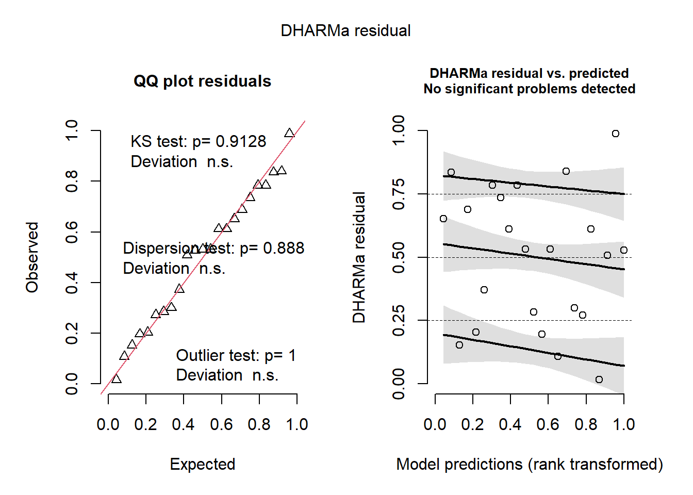
Code
# =============================================
# SUPPLEMENT: Can a few checkpoints summarize the functional clusters?
# Goal:
# Use fitted mean curves (m1$pred: geno × stage → mu) and ask:
# - How well do 1 or 2 Zadoks checkpoints reproduce the "reference"
# functional clusters from the full curve?
# - Can an AUC over a Zadoks window (optionally + a late checkpoint)
# recover the same clusters?
#
# Reference truth:
# ref_cluster = m1$clusters$cluster (cluster from full functional pipeline)
#
# Approach:
# For each feature set, cluster genotypes with k-means (k fixed),
# then compute ARI vs ref_cluster.
set.seed(1)
# ---------------------------
# S0) Reference labels (geno-level)
# ---------------------------
ref <- m1$clusters %>%
transmute(geno, ref_cluster = as.integer(cluster))
# ---------------------------
# S1) Build genotype × Zadoks matrix of fitted means (mu)
# - rounds stage to integer Zadoks (stage_round)
# - averages duplicates after rounding (if any)
# ---------------------------
mu_wide <- m1$pred %>%
dplyr::select(geno, time, mu) %>%
dplyr::left_join(ref, by = "geno") %>%
dplyr::filter(!is.na(ref_cluster), is.finite(time), is.finite(mu)) %>%
dplyr::mutate(stage_round = round(time)) %>%
dplyr::group_by(geno, stage_round, ref_cluster) %>%
dplyr::summarise(mu = mean(mu), .groups = "drop") %>%
tidyr::pivot_wider(names_from = stage_round, values_from = mu)
stopifnot(nrow(mu_wide) >= 10)
# Helper: choose candidate Zadoks with adequate coverage
choose_candidates <- function(mu_wide, cand = 40:90, min_coverage = 0.90) {
cov_tbl <- tibble(stage_round = cand) %>%
mutate(
prop_nonNA = map_dbl(stage_round, ~mean(!is.na(mu_wide[[as.character(.x)]])))
) %>%
filter(prop_nonNA >= min_coverage)
cov_tbl$stage_round
}
cand <- choose_candidates(mu_wide, cand = 40:90, min_coverage = 0.90)
cand[1:10]; length(cand) [1] 40 41 42 43 44 45 46 47 48 49[1] 51Code
# ---------------------------
# S2) ARI using 2 checkpoints (z1,z2): k-means on (mu(z1), mu(z2))
# ---------------------------
ari_two_points <- function(z1, z2, df, k = 3) {
x1 <- df[[as.character(z1)]]
x2 <- df[[as.character(z2)]]
ok <- is.finite(x1) & is.finite(x2) & !is.na(df$ref_cluster)
if (sum(ok) < (k + 5)) return(NA_real_)
X <- scale(cbind(x1[ok], x2[ok])) # scale avoids one axis dominating
cl <- kmeans(X, centers = k, nstart = 40)$cluster
adjustedRandIndex(df$ref_cluster[ok], cl)
}
pairs <- t(combn(cand, 2))
res_pairs <- tibble(
z1 = pairs[, 1],
z2 = pairs[, 2],
ARI = map2_dbl(z1, z2, ~ari_two_points(.x, .y, mu_wide, k = 3))) %>%
arrange(desc(ARI))
res_pairs %>% slice(1:10)# A tibble: 10 × 3
z1 z2 ARI
<int> <int> <dbl>
1 80 90 0.863
2 81 90 0.863
3 82 89 0.863
4 82 90 0.863
5 83 88 0.863
6 83 89 0.863
7 83 90 0.863
8 84 87 0.863
9 84 88 0.863
10 84 89 0.863Code
scale_fill_viridis_c(option = "magma")<ScaleContinuous>
Range:
Limits: 0 -- 1Code
p5 = ggplot(res_pairs, aes(z1, z2, fill = ARI)) +
geom_tile() +
scale_fill_gradient(
low = "#FFF7BC",
high = "#D4A017"
) +
theme_classic() +
labs(
x = "Zadoks (checkpoint 1)",
y = "Zadoks (checkpoint 2)",
fill = "ARI") +
guides(
fill = guide_colorbar(
barheight = 5, # altura da barra
barwidth = 0.6 )) +
theme(
legend.position = c(0.85, 0.4),
legend.title = element_text(size = 9),
legend.text = element_text(size = 8))
p5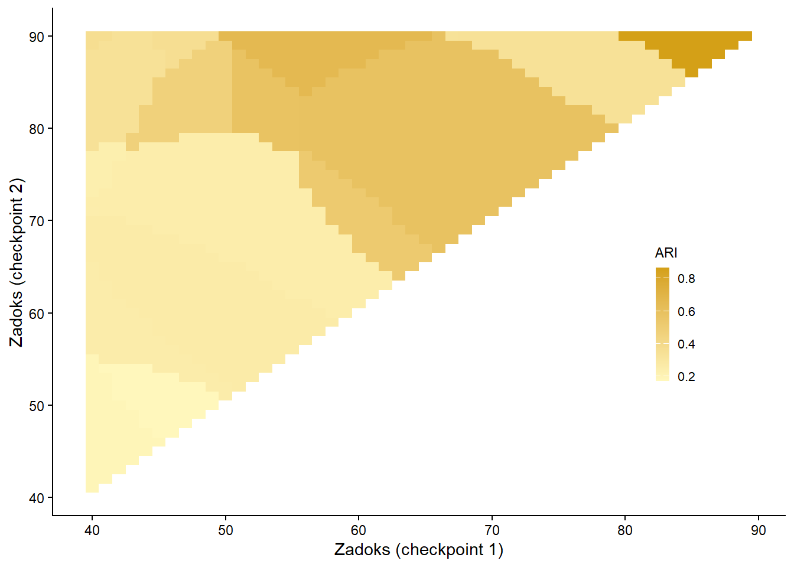
Code
# Plot best pair separation
best2 <- res_pairs %>% slice(1)
Z1 <- best2$z1;
Z2 <- best2$z2
plot_df2 <- mu_wide %>%
transmute(
geno, ref_cluster,
mu1 = .data[[as.character(Z1)]],
mu2 = .data[[as.character(Z2)]]
) %>%
filter(is.finite(mu1), is.finite(mu2))
ggplot(plot_df2, aes(mu1, mu2, color = factor(ref_cluster))) +
geom_point(size = 3, alpha = 0.9) +
theme_classic() +
labs(x = paste0("mu at Zadoks ", Z1),
y = paste0("mu at Zadoks ", Z2),
color = "Reference cluster",
title = "")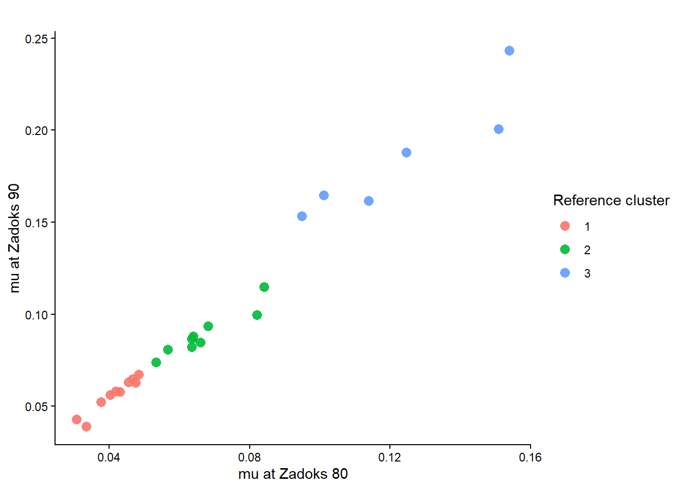
Code
# ---------------------------
# S3) ARI using 1 checkpoint z: k-means on mu(z)
# ---------------------------
ari_one_point <- function(z, df, k = 3) {
x <- df[[as.character(z)]]
ok <- is.finite(x) & !is.na(df$ref_cluster)
if (sum(ok) < (k + 5)) return(NA_real_)
X <- scale(matrix(x[ok], ncol = 1))
cl <- kmeans(X, centers = k, nstart = 50)$cluster
adjustedRandIndex(df$ref_cluster[ok], cl)
}
res_one <- tibble(
z = cand,
ARI = map_dbl(cand, ~ari_one_point(.x, mu_wide, k = 3))) %>%
arrange(desc(ARI))
res_one %>% slice(1:10)# A tibble: 10 × 2
z ARI
<int> <dbl>
1 90 1
2 86 0.863
3 87 0.863
4 88 0.863
5 89 0.863
6 67 0.585
7 68 0.585
8 69 0.585
9 70 0.585
10 71 0.585Code
best1 <- res_one %>% slice(1)
ggplot(res_one, aes(z, ARI)) +
geom_line(linewidth = 0.9) +
geom_point(size = 2) +
geom_vline(xintercept = best1$z, linetype = "dashed") +
theme_classic() +
labs(x = "Zadoks checkpoint", y = "ARI")+
scale_x_continuous(breaks = seq(40,90,5))+
scale_y_continuous(breaks = seq(0,1,0.2))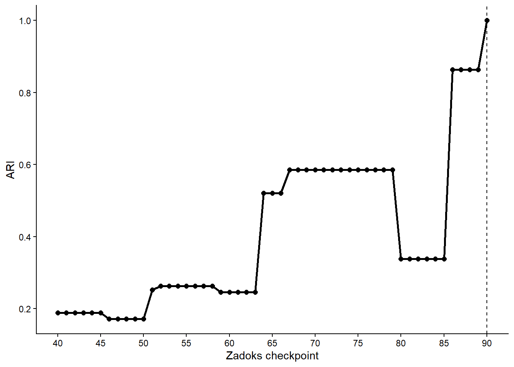
Code
# ---------------------------
# S4) AUC window search: AUC(mu) in [z1,z2] and ARI vs reference
# Optional: add a late checkpoint mu(z_chk) as a second feature.
# ---------------------------
# Prepare pred_list once (geno-split) to speed up window scans
pred <- m1$pred %>%
dplyr::select(geno, time, mu) %>%
left_join(ref, by = "geno") %>%
filter(!is.na(ref_cluster), is.finite(time), is.finite(mu)) %>%
arrange(geno, time)
pred_list <- split(pred, pred$geno)
auc_trapz <- function(time, mu, z1, z2) {
keep <- time >= z1 & time <= z2
s <- time[keep]; y <- mu[keep]
if (length(s) < 2) return(NA_real_)
sum(diff(s) * (head(y, -1) + tail(y, -1)) / 2)
}
mu_at <- function(time, mu, z) {
i <- which.min(abs(time - z))
mu[i]
}
ari_for_window <- function(z1, z2, k = 3, use_checkpoint = FALSE, z_chk = 85) {
feat <- map_dfr(pred_list, ~{
tibble(
geno = .x$geno[1],
ref_cluster = .x$ref_cluster[1],
auc = auc_trapz(.x$time, .x$mu, z1, z2),
mu_chk = mu_at(.x$time, .x$mu, z_chk)
)
}) %>%
filter(is.finite(auc), !is.na(ref_cluster)) %>%
{ if (use_checkpoint) filter(., is.finite(mu_chk)) else . }
if (nrow(feat) < (k + 5)) return(NA_real_)
X <- if (!use_checkpoint) {
scale(matrix(feat$auc, ncol = 1))
} else {
scale(cbind(feat$auc, feat$mu_chk))
}
cl <- kmeans(X, centers = k, nstart = 50)$cluster
adjustedRandIndex(feat$ref_cluster, cl)
}
# Window grid (restrict to reasonable lengths)
starts <- 40:75
ends <- 70:90
grid_win <- expand.grid(z1 = starts, z2 = ends) %>%
as_tibble() %>%
filter(z2 > z1, (z2 - z1) >= 10)
# Run scans
res_auc <- grid_win %>%
mutate(ARI = map2_dbl(z1, z2, ~ari_for_window(.x, .y, k = 3, use_checkpoint = FALSE))) %>%
arrange(desc(ARI))
res_auc_chk <- grid_win %>%
mutate(ARI = map2_dbl(z1, z2, ~ari_for_window(.x, .y, k = 3, use_checkpoint = TRUE, z_chk = 85))) %>%
arrange(desc(ARI))
res_auc %>% slice(1:10)# A tibble: 10 × 3
z1 z2 ARI
<int> <int> <dbl>
1 61 71 0.585
2 60 72 0.585
3 61 72 0.585
4 62 72 0.585
5 58 73 0.585
6 59 73 0.585
7 60 73 0.585
8 61 73 0.585
9 62 73 0.585
10 63 73 0.585Code
res_auc_chk %>% slice(1:10)# A tibble: 10 × 3
z1 z2 ARI
<int> <int> <dbl>
1 40 70 0.655
2 41 70 0.655
3 42 70 0.655
4 43 70 0.655
5 40 71 0.655
6 41 71 0.655
7 42 71 0.655
8 40 72 0.655
9 44 70 0.585
10 45 70 0.585Code
# Visualize best "AUC + checkpoint" feature space
best_auc <- res_auc_chk %>% slice(1)
Z1 <- best_auc$z1; Z2 <- best_auc$z2
feat_best <- map_dfr(pred_list, ~{
tibble(
geno = .x$geno[1],
ref_cluster = .x$ref_cluster[1],
auc = auc_trapz(.x$time, .x$mu, Z1, Z2),
mu85 = mu_at(.x$time, .x$mu, 85))}) %>%
filter(is.finite(auc), is.finite(mu85))
p6=ggplot(feat_best, aes(auc, mu85, color = factor(ref_cluster))) +
geom_point(size = 3, alpha = 0.9) +
theme_classic() +
scale_color_manual(values = cols) +
theme(legend.position = "none") +
labs(x = paste0("AUC(mu) in Zadoks [", Z1, ", ", Z2, "]"),
y = "mu at Zadoks 85",
color = "Reference cluster",
title = "")
(p_curves| p_dend)/
(p3|p4)/
(p5|p6)+plot_annotation(tag_levels = "A")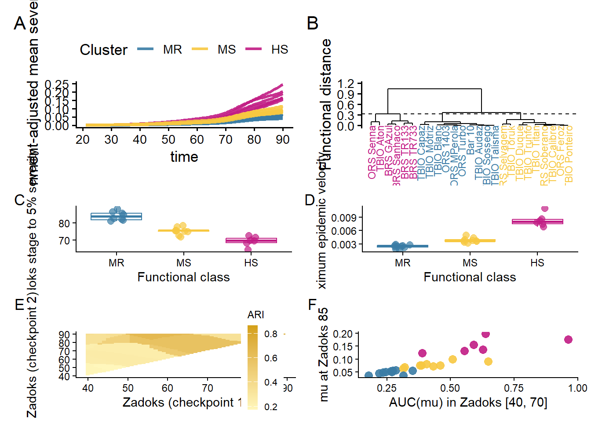
Code
# ggsave("plot_ts.png", width = 8, height = 13, bg = "white", dpi = 1000)